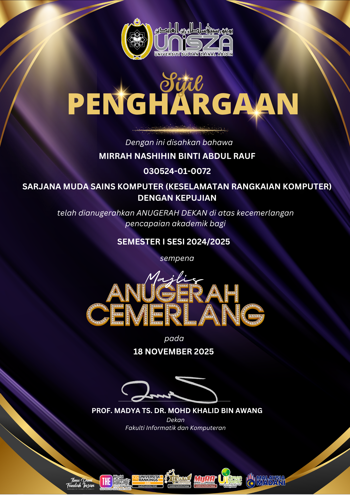
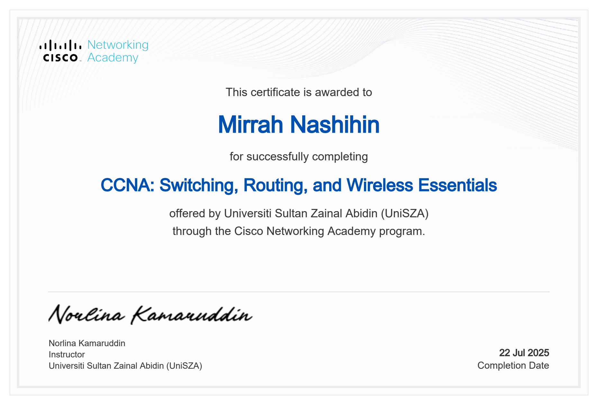
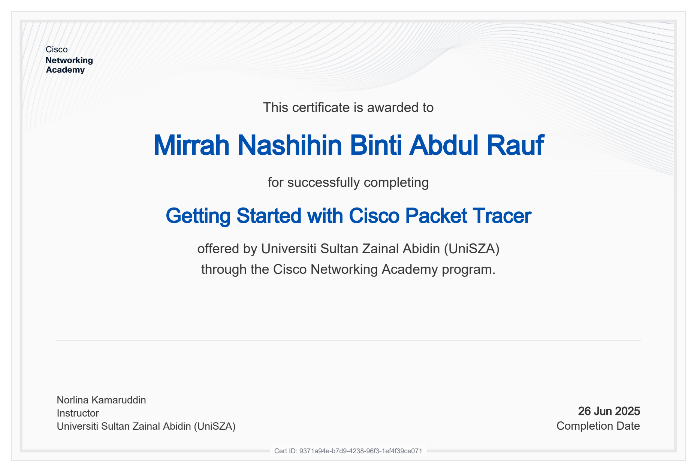
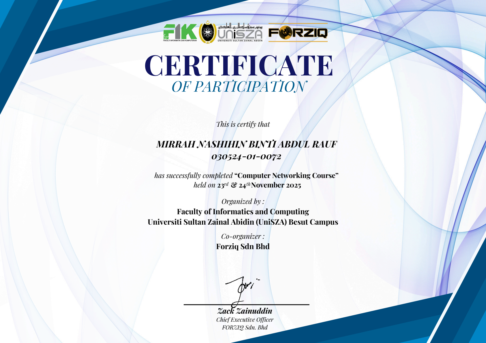

Dean's Award
Semester I Session 2024/2025 | 18 November 2025
Evidence and Achievement
Certificates and learning evidence that support my networking and cybersecurity pathway.

Semester I Session 2024/2025 | 18 November 2025

Academic achievement evidence from Majlis Anugerah Cemerlang.

Cisco Networking Academy | Jul 2025
View PDF
Cisco Networking Academy | Jun 2025
View PDF
Networking fundamentals and practical networking concepts | Nov 2025
View PDFThe Dean's Award reflects my commitment to academic excellence in Bachelor of Computer Science (Computer Network Security) with Honours. This achievement motivates me to keep improving my technical skills and professional readiness for cybersecurity roles.
I am currently targeting CompTIA SecurityX as part of my 6-month cybersecurity development plan. This supports my goal to strengthen my security foundation for SOC and incident response roles.